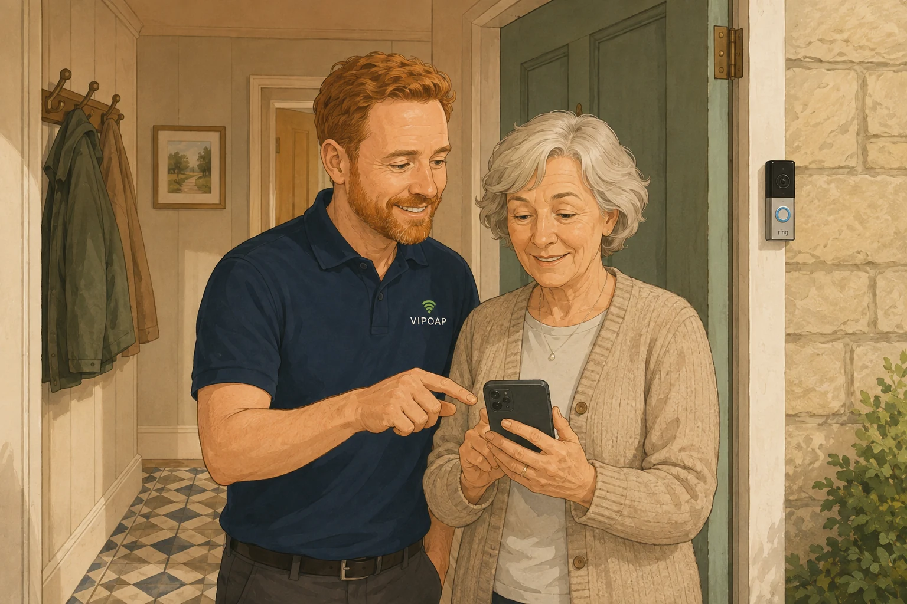

Your details are treated with care
This notice explains what VIPOAP collects, why it is needed and the choices you have.

We use only the information needed to answer you, arrange and deliver support, keep people safe and run the service responsibly. We do not sell personal information.
Who is responsible for your information?
VIPOAP is the data controller for personal information handled through this website, the VIPOAP app and VIPOAP OS. For privacy questions or requests, email help@vipoap.co.uk or call 07977 254158.
Information we may collect
- Names, contact details, address, postcode and communication preferences
- Booking, payment status, membership and service history (we do not receive your full card details)
- Problem descriptions, device and household-technology records, visit notes and agreed follow-ups
- Accessibility, communication, consent and authorised-family-contact details you choose to provide
- Safety, complaint and security records where they are necessary
- Basic website, sign-in and security information used to protect the service
Please never put passwords, PINs, recovery codes, security answers or full card details into a VIPOAP form or message.
Why we use it and our lawful bases
- Bookings and support: to take steps at your request and perform our contract with you.
- Enquiries, service improvement and fraud prevention: for our legitimate interests in responding, running and protecting VIPOAP, balanced against your rights.
- Invoices, tax, complaints and legal claims: to meet legal obligations and establish or defend legal rights.
- Safety and safeguarding: to protect customers, Engineer Partners and others, including vital interests or legal obligations where applicable.
- Optional marketing, WhatsApp communication or recording: with consent where consent is the appropriate basis. You can withdraw it.
Who may receive it?
We share only what is necessary with the assigned VIPOAP Engineer Partner and an authorised family contact involved in the booking. A safeguarding concern may normally be reported to the child or other authorised contact who booked for a parent, unless sharing could increase risk or conflict with professional or legal advice.
We also use carefully selected providers for hosting and security (Cloudflare), email (Resend), payments (Stripe), callback delivery (FormSubmit), business records (Zoho, where enabled) and approved remote-support tools. Professional advisers, insurers, regulators, emergency services or law-enforcement bodies may receive information where necessary and lawful.
Information processed outside the UK
Some providers may process information in other countries. Where UK transfer rules apply, we use an adequacy regulation or appropriate contractual and organisational safeguards and assess the protection available.
How long we keep it
We keep information only for as long as its purpose, safety and legal requirements justify. Routine enquiries are normally reviewed for deletion after 12 months. Booking, payment and accounting records may normally be kept for up to six years. Automated scam-check records expire after 90 days. Remote-support recordings, where separately agreed and enabled, are normally retained for 90 days unless a safety incident, complaint or legal requirement needs a longer hold. Security and access records are regularly reviewed and minimised.
Your rights
Depending on the circumstances, you can ask for access, correction, deletion, restriction, objection or transfer of your information. Where we rely on consent, you can withdraw it. You can also ask us to review a decision or raise a privacy complaint. We may need to confirm your identity before responding.
Complaints
Contact help@vipoap.co.uk first and we will acknowledge, investigate and explain our response. You also have the right to complain to the Information Commissioner’s Office.
Last reviewed: 6 September 2026